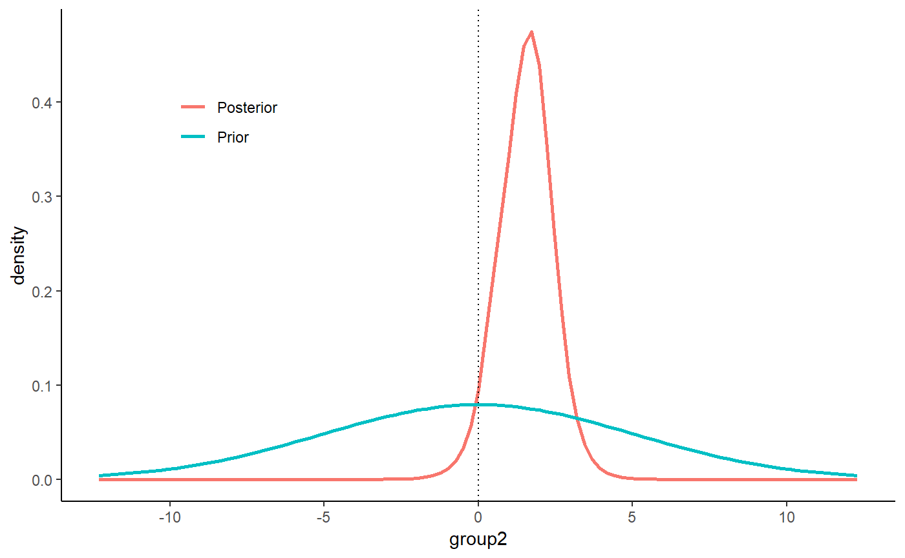

This vignette can be referred to by citing the package:
- Makowski, D., Ben-Shachar M. S. & Lüdecke, D. (2019). Understand and Describe Bayesian Models and Posterior Distributions using bayestestR. Available from https://github.com/easystats/bayestestR. DOI: 10.5281/zenodo.2556486.
The adoption of the Bayesian framework for applied statistics, especially in social or psychological sciences, seems to be developing in two distinct directions. One of the key topics marking their separation is their opinion about the Bayes factor. In short, some authors (e.g., the “Amsterdam school”, led by Wagenmakers) advocate its use and emphasize its qualities as a statistical index, while others point to its limits and prefer, instead, the precise description of posterior distributions (using CIs, ROPEs, etc.).
bayestestR does not take a side in this debate, rather offering tools to help you in whatever analysis you want to achieve. Instead, it strongly supports the notion of an informed choice: discover the methods, try them, understand them, learn about them, and decide for yourself.
Having said that, here’s an introduction to Bayes factors :)
Bayes Factors
Bayes factors (BFs) are indices of relative evidence of one “model” (a data generating process) over another, which are used in Bayesian inference as alternatives to classical (frequentist) hypothesis testing indices. In the Bayesian framework, a Bayes factor can also be thought of as the quantity by which some prior belief about the relative odds of two models are updated in light of the observed data.
According to Bayes’ theorem:
\[ P(M|D) = \frac{P(D|M)P(M)}{P(D)} \]
Then by comparing two models, we get:
\[ \frac{P(M_1|D)}{P(M_2|D)} = \frac{P(D|M_1)}{P(D|M_2)} \times \frac{P(M_1)}{P(M_2)} \] Where the middle term is the Bayes factor: \[ BF_{12}=\frac{P(D|M_1)}{P(D|M_2)} \] Bayes factors indicate which of the compared models provide a better fit (or better describes) the observed data. These are usually computed as the ratio of marginal likelihoods of two competing hypotheses / models, but as we can see from the equation above, they can also be computed by dividing the posterior-odds by the prior-odds. Importantly, Bayes factors cover a wide range of indices and applications, and come in different flavors.
Savage-Dickey density ratio Bayes factor
The Savage-Dickey density ratio can be used to answer the question:
Given the observed data, is the null more, or less probable?
This is done by comparing the density of the null value between the prior and posterior distributions, and is an approximation of a Bayes factor against the (point) null model:
“[…] the Bayes factor for H0 versus H1 could be obtained by analytically integrating out the model parameter theta. However, the Bayes factor may likewise be obtained by only considering H1, and dividing the height of the posterior for theta by the height of the prior for theta, at the point of interest.” (Wagenmakers et al. 2010)
Let’s use the Students’ Sleep data, and try and answer the question: given the observed data, is it more or less likely that the drug (the variable group) has no effect on the numbers of hours of extra sleep (variable extra)?

The bloxplot suggests that the 2nd group has a higher number of hours of extra sleep. By how much? Let’s fit a simple Bayesian linear model.
We can use as.data.frame on this model to extract the posterior distribution related to the effect of group2, and the get_priors from the insight package to see what the prior distribution was used:
| parameter | distribution | location | scale | adjusted_scale |
|---|---|---|---|---|
| (Intercept) | normal | 0 | 10.0 | 20 |
| group2 | normal | 0 | 2.5 | 5 |
For the group2 parameter, the prior that was used was a normal distribution of mean (location) 0 and SD (scale) 5.044799. We can simulate this prior distribution as follows:
We can now plot both the prior:

Looking at the distributions, we can see that the posterior is centred at 1.57. But this does not mean that an effect of 0 is necessarily less probable. To test that, we will use bayesfactor_savagedickey!
Compute the Savage-Dickey’s BF
> # Bayes Factor (Savage-Dickey density ratio)
>
> Bayes Factor
> 0.84
> ---
> Evidence Against Test Value: 0This BF indicates likelihood of an effect of 0 (the point-null effect model) is 0.84 less probable given the data. In other words, a null effect model is 1/0.84 = 1.19 time more likely than a model with an effect! Thus, although the centre of distribution has shifted, it is still quite dense around the null.
Note that interpretation guides for Bayes factors can be found here.
Directional test
We can also conduct a directional test if we have some prior hypothesis about the direction of the effect:

test_group2_right <- bayesfactor_savagedickey(posterior = posterior, prior = prior, direction = ">")
test_group2_right> # Bayes Factor (Savage-Dickey density ratio)
>
> Bayes Factor
> 1.6
> ---
> Evidence Against Test Value: 0
> Right-Sided testAs we can see, given that we have an a priori assumption about the direction of the effect (that the effect is positive), the presence of an effect is 1.6 times more likely than the absence of an effect. This indicates that, given the observed data, the posterior mass has shifted away from the null value, giving some evidence against the null (note that a Bayes factor of 1.6 is still considered quite weak evidence).
Testing all model parameters
Alternatively, we could also pass our model directly as-is to bayesfactor_savagedickey to simultaneously test all of the model’s parameters:
> Computation of Bayes factors: sampling priors, please wait...> # Bayes Factor (Savage-Dickey density ratio)
>
> Parameter Bayes Factor
> (Intercept) 0.065
> group2 0.833
> ---
> Evidence Against Test Value: 0Comparing models
Besides comparing distributions, Bayes factors can also be used to compare whole models. In these cases they can answer the question:
Given the observed data, which model is more likely?
This is usually done by computing the marginal likelihoods of two models. In such a case, the Bayes factor is a measure of relative evidence between the two compared models. Note that the compared models do not need to be nested models (see brms2 and brms3 below).
Bayesian models (brms and rstanarm)
Note: In order to compute the Bayes factors for models, non-default arguments must be added upon fitting:
-
brmsfitmodels must have been fitted withsave_all_pars = TRUE -
stanregmodels must have been fitted with a defineddiagnostic_file.
Let’s first fit 5 Bayesian regressions with brms to predict Sepal.Length:
library(brms)
m0 <- brm(Sepal.Length ~ 1, data = iris, save_all_pars = TRUE)
m1 <- brm(Sepal.Length ~ Petal.Length, data = iris, save_all_pars = TRUE)
m2 <- brm(Sepal.Length ~ Species, data = iris, save_all_pars = TRUE)
m3 <- brm(Sepal.Length ~ Species + Petal.Length, data = iris, save_all_pars = TRUE)
m4 <- brm(Sepal.Length ~ Species * Petal.Length, data = iris, save_all_pars = TRUE)We can now compare these models with the bayesfactor_models function, using the denominator argument to specify which model all models will be compared against (in this case, the constant model):
> Bayes factor analysis
> --------------
> [1] Petal.Length 3.4e+44
> [2] Species 5.6e+29
> [3] Species + Petal.Length 7.1e+55
> [4] Species * Petal.Length 9.1e+55
>
> Against denominator:
> [5] (Intercept only)
> ---
> Bayes factor type: marginal likelihoods (bridgesampling)We can see that the full model is the best model - with \(BF_{\text{m0}}=9\times 10^{55}\) compared to the null (intercept only). We can also change the reference model to the main effect model:
> Bayes factor analysis
> --------------
> [1] Petal.Length 4.8e-12
> [2] Species 7.9e-27
> [4] Species * Petal.Length 1.3e+00
> [5] (Intercept only) 1.4e-56
>
> Against denominator:
> [3] Species + Petal.Length
> ---
> Bayes factor type: marginal likelihoods (bridgesampling)As we can see, though the full model is the best, there hardly any evidence it is preferable to the main effects model.
NOTE: In order to correctly and precisely estimate Bayes Factors, you always need the 4 P’s: Proper Priors (1, 2, 3), and a Plentiful Posterior (4).
The BIC approximation for Frequentist Models
Interestingly, we can also compute Bayes factors for frequentist models! This is done by comparing BIC measures, and also allows for comparing non-nested models (Wagenmakers 2007). Let’s try it out on mixed models:
library(lme4)
m0 <- lmer(Sepal.Length ~ (1 | Species), data = iris)
m1 <- lmer(Sepal.Length ~ Petal.Length + (1 | Species), data = iris)
m2 <- lmer(Sepal.Length ~ Petal.Length + (Petal.Length | Species), data = iris)
m3 <- lmer(Sepal.Length ~ Petal.Length + Petal.Width + (Petal.Length | Species), data = iris)
m4 <- lmer(Sepal.Length ~ Petal.Length * Petal.Width + (Petal.Length | Species), data = iris)
bayesfactor_models(m1, m2, m3, m4, denominator = m0)> Bayes factor analysis
> --------------
> [1] Petal.Length + (1 | Species) 8.2e+24
> [2] Petal.Length + (Petal.Length | Species) 4.8e+23
> [3] Petal.Length + Petal.Width + (Petal.Length | Species) 1.5e+22
> [4] Petal.Length * Petal.Width + (Petal.Length | Species) 5.9e+20
>
> Against denominator:
> [5] 1 + (1 | Species)
> ---
> Bayes factor type: BIC approximationInclusion Bayes factors via Bayesian model averaging
Inclusion Bayes factors answer the question:
Given the observed data, how much more likely are models with a particular effect, compared to models without that particular effect?
In other words, on average - are models with effect \(X\) better than models without effect \(X\)?
Lets use the brms example from above:
> Pr(prior) Pr(posterior) Inclusion BF
> Petal.Length 0.6 1.00 1.9e+26
> Species 0.6 1.00 3.1e+11
> Species:Petal.Length 0.2 0.56 5.1e+00
> ---
> Inclusion BFs compared among all models.If we examine the interaction term’s inclusion Bayes factor, we can see that across all 5 models, a model with the interaction term (Species:Petal.Length) is 5 times more likely than a model without the interaction term.
We can also compare only matched models - i.e., a model without effect \(A\) will only be compared to models with effect \(A\), but not with models with higher-level interaction. (See explanation for why you might want to do this here.)
> Pr(prior) Pr(posterior) Inclusion BF
> Petal.Length 0.4 0.44 1.3e+26
> Species 0.4 0.44 2.1e+11
> Species:Petal.Length 0.2 0.56 5.1e+00
> ---
> Inclusion BFs compared among matched models only.In this case, it did not change the inclusion Bayes factors by much (by did change the prior and posterior effect probabilities).
Comparison with JASP
bayesfactor_inclusion is meant to provide Bayes Factors across model averages, similar to JASP’s Effects option. Lets compare the two:
Compared across all models
library(BayesFactor)
ToothGrowth$dose <- as.factor(ToothGrowth$dose)
BF_ToothGrowth <- anovaBF(len ~ dose*supp, ToothGrowth)
bayesfactor_inclusion(BF_ToothGrowth)> Pr(prior) Pr(posterior) Inclusion BF
> supp 0.6 1.00 1.4e+02
> dose 0.6 1.00 3.2e+14
> supp:dose 0.2 0.73 1.1e+01
> ---
> Inclusion BFs compared among all models.
Compared across matched models
> Pr(prior) Pr(posterior) Inclusion BF
> supp 0.4 0.27 5.8e+01
> dose 0.4 0.27 1.3e+14
> supp:dose 0.2 0.73 1.1e+01
> ---
> Inclusion BFs compared among matched models only.
With Nuisance Effects
We’ll add dose to the null model in JASP, and do the same in R:
BF_ToothGrowth_against_dose <- BF_ToothGrowth[3:4]/BF_ToothGrowth[2] # OR:
# update(bayesfactor_models(BF_ToothGrowth), subset = c(4,5), reference = 3)
BF_ToothGrowth_against_dose> Bayes factor analysis
> --------------
> [1] supp + dose : 58 ±1.9%
> [2] supp + dose + supp:dose : 156 ±1.8%
>
> Against denominator:
> len ~ dose
> ---
> Bayes factor type: BFlinearModel, JZS> Pr(prior) Pr(posterior) Inclusion BF
> dose 1.00 1.00 NaN
> supp 0.67 1.00 107.0
> supp:dose 0.33 0.73 5.3
> ---
> Inclusion BFs compared among all models.
References
Wagenmakers, Eric-Jan. 2007. “A Practical Solution to the Pervasive Problems Ofp Values.” Psychonomic Bulletin & Review 14 (5): 779–804.
Wagenmakers, Eric-Jan, Tom Lodewyckx, Himanshu Kuriyal, and Raoul Grasman. 2010. “Bayesian Hypothesis Testing for Psychologists: A Tutorial on the Savage–Dickey Method.” Cognitive Psychology 60 (3): 158–89.